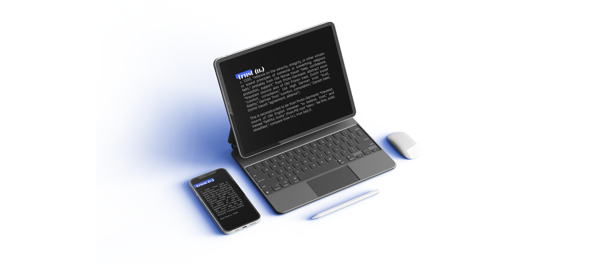
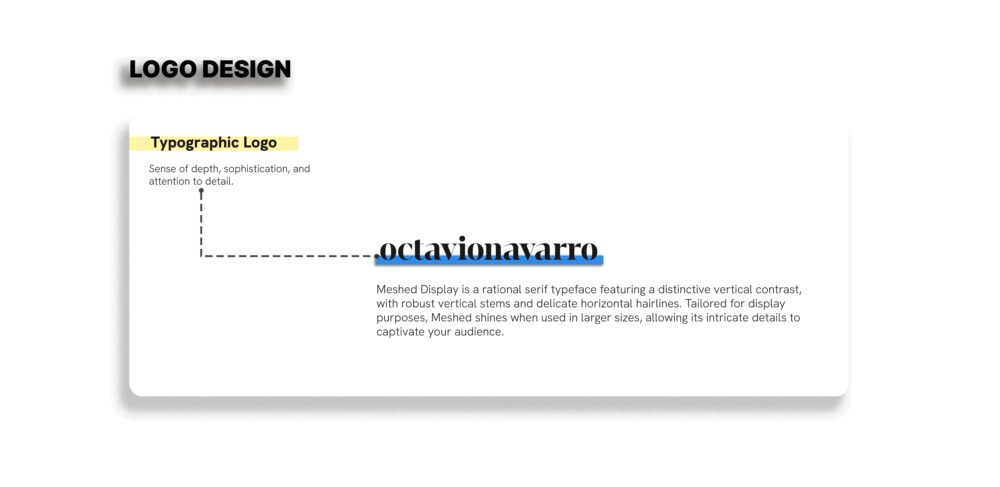
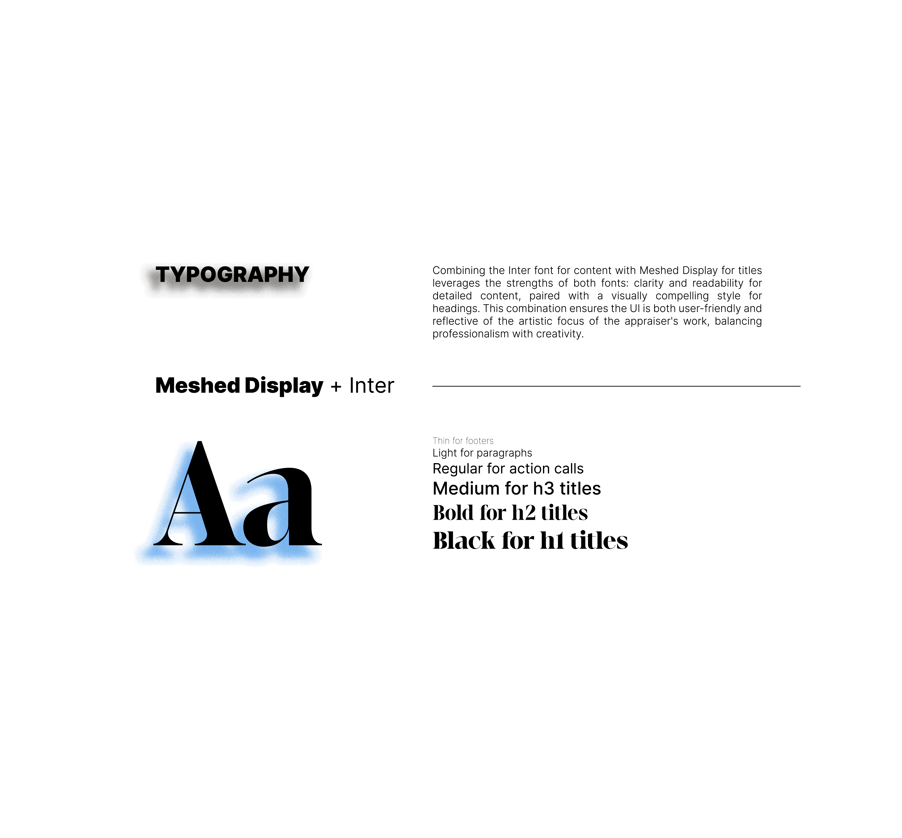

Focusing on creating a seamless experience for both art collectors and artists seeking professional valuation services.
My role in the project: UX|UI Designer
Tasks: Conducting user interviews, developing prototypes, reviewing through usability studies, building iterations, website and interface design.
Project Duration: May 2022 - July 2022.
This site must showcase the new brand’s unique approach to art appraisal, with special focus on modern and contemporary art. Being a new brand, it is fundamental to build confidence and trust in potential customers throughout a transparent method, as well an easy-reach user experience; visuals must express the professional working method of M.A. Octavio Navarro as well as his friendly reach towards clients.
In order to understand users needs and concerns I did 10 interviews and 20 surveys . Figuring out how to build a strong sense of trust and providing with a comfortable navigation where my two main goals.
The following are some of the questions asked during the interviews / surveys:
How often do you engage with art appraisers?
What services do you seek from an art appraiser?
What specific information would you like to find easily when navigating?
What features or design elements make a website trustworthy in your opinion?
What is your preferred method of contact (e.g., email, phone, chat)?
What factors contribute to a sense of trustworthiness the website?
Below some of the data collected after this stage.
40% of interviewees are art collectors, 30% are artists, and 30% are gallery owners or art dealers.
70% have engaged with art appraisers more than once in the past year.
40% of users consider themselves knowledgeable about art appraisals.
25% are new to using art appraisers and would appreciate guidance when looking for one.
83% expect to find clear information about appraisal services and fees.
75% want a detailed FAQ section to address common questions about the appraisal process.
67% of users desire an online appraisal request form to streamline the initial contact process.
50% would like to see an educational blog or resources about art valuation and market trends.
70% prefer a straightforward menu layout with clear categories such as "Services," "About Us," "Contact," and "Testimonials."
72% consider client testimonials and reviews critical to establishing trust.
80% want to see credentials and certifications of the appraiser prominently displayed
54% find it important to view a portfolio of past appraisals or case studies to gauge expertise.
70% feel that ongoing communication and transparency are key factors in building long-term relationships with appraisers.
55% prefer whatsapp or email as the primary method of communication
41% are interested in booking appointments directly through the website.
60% value having a dedicated support section with clear contact information and response times.
Through this research, I gained valuable insights into the diverse backgrounds and motivations of individuals who interact with art appraisers. Analyzing this data allowed me to identify key trends and commonalities, which I used to 1) expand on the two main segments for our target audience and 2) create detailed user personas representing the aforementioned segments.
These users are primarily focused on accurately valuing and insuring their collections. They emphasize the importance of trust and credibility in appraisers and value educational resources to stay informed about market trends.
These individuals are keen on understanding the value of their work and establishing a presence in the art market. They often require guidance on the business aspects of art and value clear, straightforward communication with appraisers.
“Every piece of art is an explanation of the context in which the artist and its work evolved.”
“Every artist was first an amateur.”
Marco is an emerging artist who is beginning to sell his work to galleries and private collectors. He is eager to understand the value of his art and how it is perceived in the market. Marco is also interested in networking with art professionals and building a strong online presence.
As I transition from research to design, the first step in bringing the art appraiser's website to life is the creation of paper wireframes. This stage involves sketching preliminary layouts that visualize the structure and functionality of the website, serving as a blueprint for the digital design process. Paper wireframes allow me to experiment with different layouts and design elements quickly and inexpensively, facilitating early feedback and iteration.
Following the completion of paper wireframes, the next step in the design process is to create digital wireframes. This stage involves transitioning from rough sketches to more polished, computer-generated layouts that provide a clearer visualization of the website’s structure and functionality. Digital wireframes serve as an intermediary step between paper sketches and high-fidelity prototypes, allowing me to refine design elements and further develop the user experience.

After developing digital wireframes, the next step in the design process is to create a low-fidelity prototype. This stage involves transforming static wireframes into an interactive prototype that simulates the user experience. A low-fidelity prototype provides a basic yet functional representation of the website, allowing me to test user flows and gather early feedback on the overall design and usability.
As part of the design validation process, I conducted an online moderated usability study to evaluate the effectiveness and user experience of the prototype. Using video conferencing tools and screen sharing, I was able to observe participants’ interactions and gather insights efficiently. Five participants were selected to represent a mix of art collectors and emerging artists, ensuring diverse perspectives and feedback on the prototype. Each session lasted between 10 to 15 minutes, providing a focused yet comprehensive evaluation of the prototype’s usability.
Below, the key findings:
All participants were able to complete basic tasks, such as navigating to the contact page or viewing service details.
Some participants had difficulty reading text overlapping pattern backgrounds. However, considered the backgrounds stylish and worth keeping .
A few mentioned texts in the 'Services' section was so stacked it made it difficult to understand the hierarchy and organization between different services.
After completing the usability study and gathering valuable feedback, the next phase in the design process involved refining the website’s design to ensure it aligns with the client’s vision and user needs. This phase included several key steps: creating a moodboard, developing mockups, and building a high-fidelity prototype.
To establish a cohesive visual identity for the website, I collaborated with the client to create a moodboard. This initial step involved selecting a range of images, color palettes, typography styles, and design elements that reflect the desired aesthetic and emotional tone of the site. The moodboard served as a reference point for defining the overall look and feel, ensuring that the website evokes the right emotions and aligns with the client’s brand identity.

The moodboard helped establish the visual direction, including design elements that evoke trust, expertise, and elegance. This foundation guided the development of subsequent design stages.
Building on the moodboard, I created detailed mockups of the website’s key pages. Mockups are static representations of the website’s layout and design, providing a clear view of how the finalized design will look. This step involved applying the color palette and design elements defined in the moodboard to create high-fidelity visual representations of the website’s pages.


Mockups were presented to the client for feedback, allowing for adjustments and final approval before moving on to the high-fidelity prototype.
In this section of the UX design case study, we delve into the creation and implementation of the design system that underpins the user interface of our project. The design system serves as the foundational framework for maintaining consistency, efficiency, and cohesiveness throughout the application, ensuring that all design elements align with the overall vision and user experience goals.
 
Blue de France
Primary Color 1
HSL
180, 100%, 50%
HEX
##318CE7
Dark Brown
Primary Color 1
HSL
180, 100%, 50%
HEX
#413E3D
White
Primary Color 1
HSL
180, 100%, 50%
HEX
#00FFFF
Cofee
Primary Color 1
HSL
180, 100%, 50%
HEX
#00000
Coffee
Primary Color 1
HSL
180, 100%, 50%
HEX
#595755
Cornflower Blue
Primary Color 1
HSL
180, 100%, 50%
HEX
#4b9cff


With the mockups approved, I proceeded to develop the hi-fi protoype. This interactive version of the design incorporates realistic visual details and functional elements, providing a comprehensive simulation of the final website, allowing for detailed testing of interactions, user flows, and overall usability. Click here to check the high-fidelity prototype.
Accessibility considerations were integrated throughout the design refinement process to ensure the website is usable by individuals with varying abilities. Applying accessibility standards helps create an inclusive experience and ensures compliance with legal and ethical guidelines.
Color palette tested for compliance with WCAG (Web Content Accessibility Guidelines) standards.
Interactive elements accessible via keyboard navigation, allowing users with motor disabilities to interact with the website effectively.
Descriptive alt text was added to all images to provide context for users relying on screen readers.
Proper use of semantic HTML elements for users with assistive technologies.
The project has successfully moved through critical design stages, from initial research and wireframes to high-fidelity prototypes and accessibility considerations. With key takeaways highlighting the strengths of the design and clear next steps outlined, the project is well-positioned for a successful transition to development and eventual launch. By continuing to focus on user needs and incorporating ongoing feedback, we aim to deliver a website that provides a valuable and engaging experience for all users.